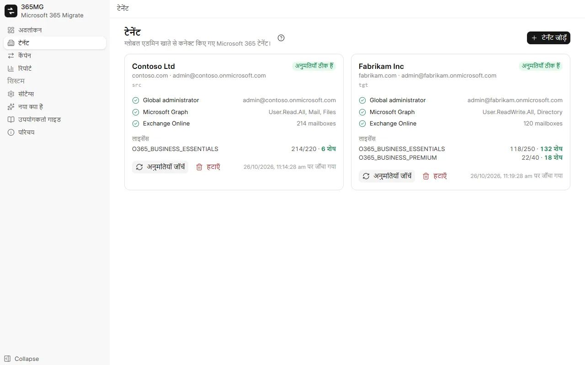
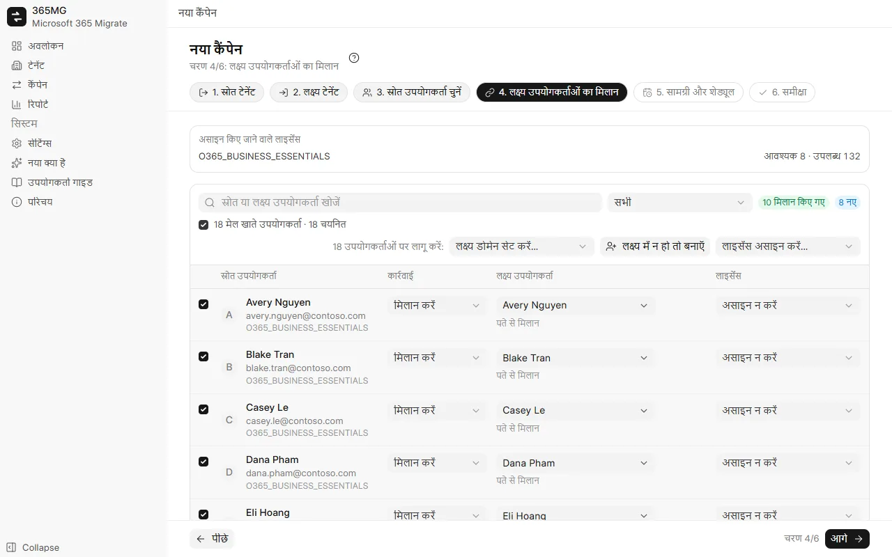
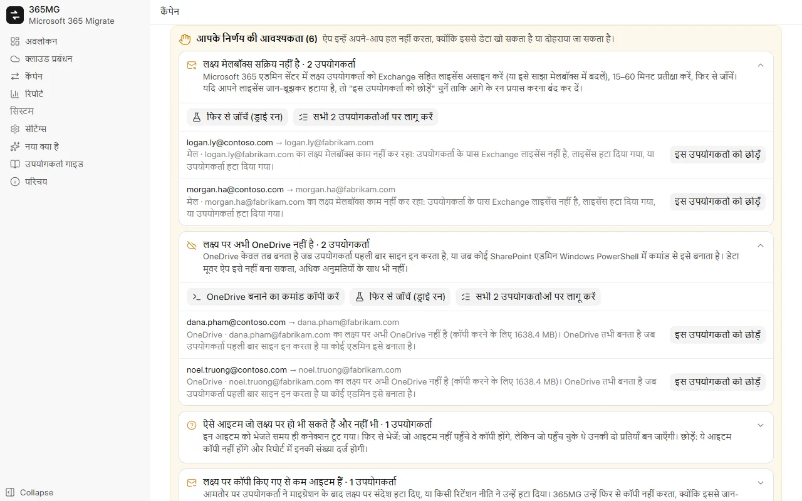

उपयोगकर्ता गाइड
365MG इंस्टॉल करने से लेकर अंतिम रिपोर्ट तक। हर भाग में स्क्रीनशॉट हैं; निर्देशित टूर एनिमेटेड कर्सर के साथ मुख्य कार्यों को दोबारा दिखाते हैं।
1. इंस्टॉल करें
365MG Windows 10 या 11 (64-bit) पर Microsoft Edge WebView2 के साथ चलता है, जो Windows में पहले से शामिल है। इंस्टॉलर लेखक द्वारा दिया जाता है: नीचे दिए पते पर लिखें।
365MG_x.y.z_x64-setup.exeचलाएँ और इंस्टॉलर के निर्देशों का पालन करें।- Start मेनू से 365MG खोलें। डेटा इसी PC पर
%APPDATA%\com.tuanhd.365mgमें रहता है। - सेटिंग्स में इंटरफ़ेस की भाषा और किसी दूसरी ड्राइव पर एक अस्थायी फ़ोल्डर चुनें।
2. शुरू करने से पहले
- स्रोत और लक्ष्य दोनों टेनेंट में एक ग्लोबल एडमिनिस्ट्रेटर खाता।
- लक्ष्य में आपके द्वारा बनाए या मिलाए जाने वाले उपयोगकर्ताओं के लिए Exchange Online (और OneDrive) वाले पर्याप्त लाइसेंस।
- एक PC जो कॉपी के दौरान चालू रह सके, तेज़ और स्थिर कनेक्शन के साथ: डेटा इसी से होकर जाता है।
- अस्थायी फ़ोल्डर के लिए एक दूसरी ड्राइव; केवल 4 MB या उससे बड़ी OneDrive फ़ाइलें इससे गुज़रती हैं।
3. क्लाउड जोड़ें
- क्लाउड प्रबंधन खोलें, क्लाउड जोड़ें पर क्लिक करें और Microsoft 365 चुनें।
- खुलने वाली ब्राउज़र विंडो में ग्लोबल एडमिन के रूप में साइन इन करें और अनुमतियाँ स्वीकार करें।
- 365MG में वापस आने पर क्लाउड एक कार्ड के रूप में दिखता है, जिस पर Microsoft 365 टैग और स्थिति बैज होता है। उसके डोमेन, अनुमति जाँच और लाइसेंस देखने के लिए उस पर क्लिक करें; एडमिन सेंटर में कुछ भी बदलने के बाद अनुमतियाँ जाँचें का उपयोग करें।

4. Google Workspace
Google Workspace स्रोत और लक्ष्य दोनों के रूप में काम करता है: मेल, संपर्क, कैलेंडर, Google Drive, शेयर की गई ड्राइव और समूहों के लिए। इसे कनेक्ट करने में तीन चरण लगते हैं, हर Workspace के लिए एक बार।
- OAuth क्लाइंट (ऐप के लिए एक बार): Google Cloud Console → APIs & Services → Credentials में Desktop app प्रकार का एक OAuth client ID बनाएँ और उसका Client ID और secret 365MG में सेटिंग्स → Google Workspace OAuth क्लाइंट में दर्ज करें। सेटिंग्स में सभी चरण और सही पेज पर जाने का एक बटन है।
- साइन इन: क्लाउड प्रबंधन में क्लाउड जोड़ें → Google Workspace पर क्लिक करें और सुपर एडमिन के रूप में साइन इन करें।
- डेटा मूवर: नया कार्ड खोलें और डेटा मूवर सेट अप करें पर क्लिक करें। 365MG एक Google Cloud प्रोजेक्ट बनाता है, आवश्यक API चालू करता है और एक सेवा खाता (service account) बनाता है, जिसकी कुंजी इस PC पर एन्क्रिप्ट करके रखी जाती है।
- Domain-wide delegation: दिखाए गए Client ID और स्कोप सूची को कॉपी करें, Admin console → Security → Access and data control → API controls → Domain-wide delegation खोलें, Add new पर क्लिक करें, दोनों पेस्ट करें और अनुमति दें (Authorize)। 365MG में वापस आकर मैंने जोड़ दिया — जाँचें पर क्लिक करें।
| सामग्री | Microsoft → Google | Google → Microsoft |
|---|---|---|
| मेल | हर फ़ोल्डर एक लेबल बन जाता है; पढ़ने की स्थिति और फ़्लैग बने रहते हैं | हर संदेश एक फ़ोल्डर में जाता है (उसका पहला लेबल, या Inbox/Sent/Archive); अन्य लेबल श्रेणियाँ बन जाते हैं |
| संपर्क | संपर्क फ़ोल्डर संपर्क समूह बन जाते हैं | संपर्क समूह संपर्क फ़ोल्डर बन जाते हैं |
| कैलेंडर | इवेंट प्रतिभागियों सहित इम्पोर्ट होते हैं, कोई आमंत्रण नहीं भेजा जाता | इवेंट प्रतिभागियों के बिना बनाए जाते हैं (Microsoft आमंत्रण भेज देता); प्रतिभागियों की सूची इवेंट के विवरण में रखी जाती है |
| ड्राइव | OneDrive फ़ाइलें जैसी हैं वैसी ही My Drive में | Docs, Sheets, Slides को Word, Excel, PowerPoint में एक्सपोर्ट किया जाता है; Forms और Sites छोड़ दिए जाते हैं |
| शेयर की गई ड्राइव | SharePoint/Teams लाइब्रेरी → सदस्यों सहित शेयर की गई ड्राइव | शेयर की गई ड्राइव → सदस्यों सहित निजी Microsoft 365 समूह (टीम साइट) |
| समूह | Microsoft 365 समूह और सूचियाँ → मिलती-जुलती सेटिंग्स वाले Google Groups | Google Groups → Microsoft 365 समूह |
शेयर की गई ड्राइव: कैंपेन विकल्पों में शेयर की गई ड्राइव / SharePoint लाइब्रेरी चुनें, फिर कैंपेन के शेयर की गई ड्राइव टैब में स्रोत ड्राइव चुनें और लक्ष्य में बनाएँ पर क्लिक करें: 365MG लक्ष्य में शेयर की गई ड्राइव या Microsoft 365 समूह बनाता है और जिन सदस्यों का मिलान कर पाता है उन्हें जोड़ता है।
5. कैंपेन बनाएँ
एक कैंपेन उपयोगकर्ताओं के एक समूह को एक स्रोत टेनेंट से एक लक्ष्य टेनेंट में ले जाता है। विज़ार्ड में छह चरण हैं; शीर्षक, चरण और फ़िल्टर हमेशा ऊपर दिखते हैं, और पीछे / आगे / कैंपेन सहेजें हमेशा नीचे रहते हैं।
- स्रोत टेनेंट और लक्ष्य टेनेंट: दोनों का एक-एक चरण।
- स्रोत उपयोगकर्ता चुनें: लाइसेंस, डोमेन या स्थिति से फ़िल्टर करें, सूची में उपयोगकर्ताओं को चुनें और चयन में जोड़ें।
- लक्ष्य उपयोगकर्ताओं का मिलान: 365MG पते, उपनाम या प्रदर्शन नाम से लक्ष्य उपयोगकर्ता सुझाता है। पंक्तियाँ चुनें, फिर एक साथ लक्ष्य डोमेन सेट करें…, लक्ष्य में न हो तो बनाएँ या लाइसेंस असाइन करें… लागू करें; सूची के ऊपर का चेकबॉक्स फ़िल्टर में दिख रही सभी पंक्तियाँ चुन लेता है।
- सामग्री और शेड्यूल: मेल, OneDrive, संपर्क, कैलेंडर; Junk Email छोड़ें; एक बार या हर N घंटे चलाएँ; थ्रेड की संख्या।
- समीक्षा: सारांश और ज़रूरी लाइसेंस जाँचें, फिर कैंपेन सहेजें पर क्लिक करें।

6. लक्ष्य उपयोगकर्ता तैयार करें
कैंपेन पेज पर उपयोगकर्ता बनाएँ और लाइसेंस असाइन करें "बनाएँ" चिह्नित लक्ष्य उपयोगकर्ता बनाता है और हर उपयोगकर्ता को चुना हुआ लाइसेंस देता है। विफल पंक्तियाँ कारण दिखाती हैं; उसे ठीक करें और फिर से चलाएँ।
नए उपयोगकर्ताओं को एक यादृच्छिक प्रारंभिक पासवर्ड मिलता है, जिसे उन्हें पहले साइन इन पर बदलना होता है। उन्हें ⋯ मेनू से CSV के रूप में निर्यात करें, सौंप दें, फिर फ़ाइल हटा दें।
7. वेव और ड्राई रन
बड़े माइग्रेशन को बाँटने के लिए उपयोगकर्ता टैब में उपयोगकर्ताओं पर टिक करें और वेव में ले जाएँ का उपयोग करें। फिर रन पट्टी एक बार में एक वेव शुरू कर सकती है; शेड्यूल किए गए रन पहले से खोली गई हर वेव को सिंक करते रहते हैं।
ड्राई रन (केवल गिनती) दोनों तरफ़ पढ़ता है और बताता है कि वास्तविक रन कितने आइटम, फ़ाइलें और मेगाबाइट कॉपी करेगा। यह लक्ष्य में कुछ नहीं लिखता और यह भी जाँचता है कि हर लक्ष्य मेलबॉक्स और OneDrive मौजूद है।
8. चलाएँ, रोकें, फिर से शुरू करें
हर कैंपेन टैब के ऊपर की रन पट्टी दिखाती है कि कैंपेन क्या कर रहा है और आगे क्या होगा।
| स्थिति | क्या दिखता है | बटन |
|---|---|---|
| अभी तक नहीं चला | शेड्यूल | अभी शुरू करें, ड्राई रन |
| कॉपी हो रहा है | बीता समय, चल रहे और प्रतीक्षारत थ्रेड | रोकें |
| रोका गया | पिछला रन | फिर से शुरू करें (बाकी कॉपी करता है) |
| सिंक हो गया | कब पूरा हुआ और अगला शेड्यूल किया गया रन | फिर से चलाएँ (नया डेटा लाएँ), शेड्यूल रोकें |
रोकने से थ्रेड बंद होते हैं और शेड्यूल रुक जाता है। जो कुछ कॉपी हुआ है वह जर्नल में रहता है, इसलिए फिर से शुरू करने पर कभी दो बार कॉपी नहीं होता। कॉपी प्रगति टैब हर मेलबॉक्स और OneDrive को उसकी गति के साथ दिखाता है; जो थ्रेड आगे बढ़ना बंद कर दे उसे अपने-आप पुनः आरंभ किया जाता है।
9. आपके निर्णय की आवश्यकता
जब किसी रन को ऐसी स्थिति मिलती है जिसे उसे अकेले नहीं सुलझाना चाहिए, तो कैंपेन आपके निर्णय की आवश्यकता पैनल दिखाता है, प्रकार के अनुसार समूहित, हर उपयोगकर्ता के लिए स्पष्टीकरण और कार्रवाइयों के साथ।
| प्रकार | क्या करें |
|---|---|
| लक्ष्य मेलबॉक्स काम नहीं कर रहा | उपयोगकर्ता को लाइसेंस दें (या इसे साझा मेलबॉक्स बनाएँ), 15–60 मिनट प्रतीक्षा करें, फिर से जाँचें। यदि लाइसेंस जान-बूझकर हटाया गया था, तो इस उपयोगकर्ता को छोड़ें। |
| लक्ष्य में OneDrive नहीं | OneDrive बनाने का कमांड कॉपी करें, इसे SharePoint एडमिन के रूप में Windows PowerShell में चलाएँ, या उपयोगकर्ता से एक बार साइन इन करवाएँ; फिर दोबारा जाँचें। |
| लक्ष्य उपयोगकर्ता फिर से बनाया गया था | नए मेलबॉक्स या OneDrive में शुरू से फिर से कॉपी करें, या छोड़ें। |
| अज्ञात परिणाम वाले आइटम | आइटम फिर से भेजें (जो आइटम पहले से है वह दो बन जाता है) या इन आइटम को छोड़ें। |
| लक्ष्य में कॉपी किए गए से कम | आमतौर पर लक्ष्य में जान-बूझकर हटाए गए; ठीक है से स्वीकार करें। |

10. मेल समूह
मेल समूह टैब में स्रोत समूह चुनें और समूह बनाएँ और सदस्य जोड़ें पर क्लिक करें। Graph केवल Microsoft 365 समूह बना सकता है, इसलिए वितरण सूचियाँ और मेल-सक्षम सुरक्षा समूह उसी उपनाम वाले Microsoft 365 समूह बन जाते हैं, जो सदस्यों के इनबॉक्स में डिलीवर करते हैं और बाहरी प्रेषकों से मेल स्वीकार करते हैं। जिन सदस्यों का कोई लक्ष्य उपयोगकर्ता नहीं है, वे हर समूह के लिए सूचीबद्ध होते हैं।
11. रिपोर्ट
रिपोर्ट हर कैंपेन के लिए प्रति उपयोगकर्ता और कुल स्रोत तथा कॉपी की गई संख्याएँ, ध्यान देने योग्य उपयोगकर्ता, समूह और टिप्पणियाँ दिखाता है। HTML निर्यात करें एक अकेला पेज (लाइट और डार्क, खोज और फ़िल्टर के साथ) लिखता है और उसे खोलता है; CSV निर्यात उपयोगकर्ताओं या समूहों की सूची देते हैं।
12. यूटिलिटी: ईमेल से जाँचें
यूटिलिटी → ईमेल से जाँचें किसी एक पते के लिए इस प्रश्न का उत्तर देता है: "यह मेलबॉक्स कहाँ है, यह कितना बड़ा है, और क्या माइग्रेशन ने इसे पूरा कॉपी किया?"
- पता (प्राथमिक पता या उपनाम) टाइप करें और जाँचें पर क्लिक करें। ड्राइव फ़ाइलें भी गिनने के लिए फ़ाइलें गिनें चुनें; यह पूरी ड्राइव की सूची बनाता है और इसमें कुछ मिनट लग सकते हैं।
- जिस भी क्लाउड में यह पता है, वह एक कार्ड दिखाता है: मेल आइटम की संख्या और आकार, OneDrive या Google Drive का आकार (और कोटा), उपयोगकर्ता जिन SharePoint समूह साइटों का सदस्य है (Microsoft), या Google Photos स्टोरेज (Google)।
- इस पते वाले हर कैंपेन के लिए स्रोत और लक्ष्य को अभी मापा जाता है और जर्नल के अनुसार कॉपी की गई मात्रा तथा अंतर के साथ दिखाया जाता है; उसके बाद खुले निर्णय और रन का इतिहास (हर पास: कब, सामग्री, परिणाम, आइटम, डेटा, अवधि) आते हैं।
13. सेटिंग्स और भाषाएँ
- भाषा: नौ भाषाएँ, तुरंत लागू; अरबी लेआउट को दाएँ से बाएँ कर देती है।
- रूप: हल्का, गहरा या Windows के अनुसार; टाइटल बार में सूरज/चाँद बटन से भी बदल सकते हैं।
- अस्थायी फ़ोल्डर: इसे ड्राइव C पर न रखें।
- थ्रेड को अटका हुआ मानें: बिना प्रगति के कितने मिनट बाद थ्रेड पुनः आरंभ हो (अधिकतम दो बार)।
14. अपडेट
नया क्या है हर संस्करण के बदलाव सूचीबद्ध करता है। जब नया संस्करण प्रकाशित होता है तो साइडबार उसे दिखाता है; x.y.z पर अपडेट करें उसे डाउनलोड करता है, लेखक के हस्ताक्षर की जाँच करता है, ऐप बंद करता है, इंस्टॉल करता है और फिर से खोलता है। पहले चल रहे कैंपेन रोकें; बाद में उन्हें फिर से शुरू करें।
15. समस्या निवारण
| लक्षण | कारण और समाधान |
|---|---|
| "डेटा मूवर ऐप की अनुमतियों के प्रभावी होने की प्रतीक्षा" | नए ऐप को Exchange और SharePoint द्वारा स्वीकार किए जाने में कुछ मिनट लगते हैं; रन अपने-आप 30 मिनट तक प्रतीक्षा करता है। |
| गति घटती है, कई "थ्रॉटल" संदेश | Exchange या SharePoint प्रति मेलबॉक्स और प्रति ऐप सीमा लगाते हैं। अधिक थ्रेड एक मेलबॉक्स की मदद नहीं करते; वे तब मदद करते हैं जब कई मेलबॉक्स प्रतीक्षा में हों। |
| लक्ष्य की संख्याएँ स्रोत से कम | रिपोर्ट की टिप्पणियाँ देखें: छोड़ा गया Junk Email, निर्णय से छोड़े गए आइटम, या लक्ष्य में हटाया गया मेल। |
| किसी मेलबॉक्स में लक्ष्य में पहले से मेल है | 365MG पहले रन में उसमें कॉपी करने से मना करता है। कैंपेन में इसकी अनुमति केवल तभी दें जब किसी दूसरे टूल ने उसमें कॉपी न किया हो। |